MetaFun 小传
MetaFun 是 ConTeXt 的一部分，主要用于 MetaPost 的绘图功能与 ConTeXt 的排版功能的衔接。
ConTeXt 专事文字排版，功能匹于 LaTeX，但更易于使用，二者皆为 TeX 宏包，即二者皆基于 TeX 提供的宏编程功能，对 TeX 语言予以封装，建立更利于文字排版工作的高级语言。TeX 是一种计算机排版语言，供编排科技手稿以及著作出版印刷之用 [1] 。MetaPost 是用于绘制矢量绘图的计算机语言。
目前最新的 ConTeXt 版本为 MkIV，安装 ConTeXt Standalone 可得 [2] 。ConTeXt MkIV 的基本用法可参考之前我写的几篇文章 [3–7] ，或阅读 ConTeXt 官方文档 [8, 9] 。
MetaFun 以 MetaPost 生成的矢量图形作为页面特定区域的背景，而后基于 ConTeXt 的排版功能在该背景上实现编排文字。
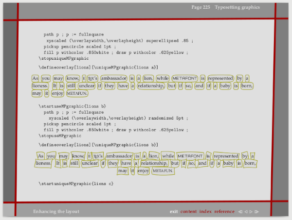
MetaPost
MetaPost 是一种编程语言 注 1 ，其编译器为 mpost。用该语言编写的程序，其输出结果为 PostScript 格式的矢量图形文件 注 2 。MPpage 环境中的 MetaPost 语句即 MetaPost 程序。在使用 context 命令生成单页面图形文件的过程中，context 命令会调用 mpost，由后者处理 MetaPost 程序，生成 PostScript 图形文件。继而 context 命令调用 TeX 引擎 注 3 会将 mpost 生成的图形文件嵌入至单页面文档中，并将图形的宽高作为页面宽高。
注 1：确切地说，MetaPost 是一种宏编程语言。
注 2：PostScript 文件可转化为 PDF、SVG 等格式的矢量图形文件。
注 3：TeX 引擎即 TeX 文档的编译器。ConTeXt 文档本质上也是 TeX 文档，因此要通过 TeX 引擎对其其进行编译，输出排版结果。ConTeXt MkIV 的 TeX 引擎为 LuaTeX，其输出的排版结果为 PDF 格式文档。
画笔
画笔即 MetaPost 的内置变量 pen。MetaPost 提供了两种画笔类型，pencircle 和 pensquare，前者为 MetaPost 默认，「笔尖」为圆形，后者「笔尖」为方形。MetaPost 允许用户自行定义画笔类型。
画笔主要用于控制所绘线条的粗细。线条默认的宽度为 PostScript 所规定的大点（Big Point）的直径尺寸，即 1 bp。MetaPost 将 1 bp 作为基准长度单位，其他单位皆为该单位的倍数：
bp := 1
mm = 2.83464
cm = 28.34645
pc = 11.95517
cc = 12.79213
in := 72
pt = 0.99626
dd = 1.06601
pickup 命令可用于设定画笔，从而影响随后的绘图语句所绘制线条的粗细，这一影响直至 pickup 命令的再次出现为止。例如，
pickup pencircle scaled 1mm;
一系列绘图语句;
pickup pencircle scaled 2mm;
一系列绘图语句;
定义了两个画笔，笔尖粗度分别为 1mm 和 2mm，分别会影响位于其后的绘图过程。scaled 用于数值大小的缩放变换；其他变换还有 shifted、rotated 以及 slant，分别为平移、旋转以及错切变换。在画笔的设定中，scaled 1mm 意味着将线条粗细程序由 MetaPost 默认的 1 bp 在水平和竖直方向上同等放大为 1 mm 注 4 。可以使用 xscaled 或 yscaled 对画笔的水平或竖直方向的粗细进行调整，对于 pencircle 类型的画笔而言，此举意味着将笔尖由默认的圆形转化为椭圆，而对于 pensquare，则意味着将笔尖由正方形转化为矩形。
注 4：在 MetaPost 程序中，数字与单位之间不能出现空格。事实上，在 MetaPost 中，诸如
1mm、2cm此类的长度描述本质上是mm或cm等变量的倍数，即1 * mm、2 * cm。
在 pickup 的影响范围内，绘图语句可以通过 withpen 命令局部调整线条的粗细，例如
withpen pencircle scaled 1mm
颜色
MetaPost 以含有三个分量的向量表示颜色。向量的三个分量分别表示红色、绿色和蓝色，取值范围为 [0, 1]，例如 (0.4, 0.5, 0.6)。
可将颜色保存到 color 类型的变量中，以备绘图中重复使用。例如
color darkred;
darkred := (0.625, 0, 0);
由于 MetaPost 内部已经定义了用于表示红色的变量 red，因此 darkred 变量的定义也可写为
color darkred;
darkred := 0.625 * red;
类似于 1 * cm 可以写为 1cm，倍数也可以直接作用于颜色：
darkred := 0.625red;
在绘图语句中可以通过 withcolor 命令设定所绘线条或区域填充的颜色，例如
withcolor 0.625red
由于颜色的倍数不可能大于 1，因此整数部分必定为 0，在 MetaPost 语句中可以省略，例如
darkred := .625red;
若绘图语句未通过 withcolor 命令设定颜色，则默认颜色为黑色。
单页图
在排版空间中，可安置 MetaPost 图形之处大致有插图、单页图、页面元素背景以及页面背景等类别。若以先习得 MetaPost 的基本用法为目的，则单页图最为合用，并且生成的图形易于转化为位图以作他用。
所谓 MetaPost 单页图，本质上是 ConTeXt 输出的排版结果——PDF 文档，只是文档页面的大小恰好容得下图形。ConTeXt 为 MetaPost 单页面提供了 MPpage 环境：
\startMPpage
MetaPost 绘图语句;
\stopMPpage
例如，假设存在 ConTeXt 文档 foo.tex，其内容为
\startMPpage
path p;
u := 10cm; v := 3cm;
p := fullsquare xyscaled (u, v) randomized 0.07u;
drawpath p;
drawpoints p;
\stopMPpage
通过 context 命令便可基于 foo.tex 生成 foo.pdf，即
$ context foo
结果得到的 foo.pdf 为单页文档，其页面只包含着一个边线被随机扰动的矩形：
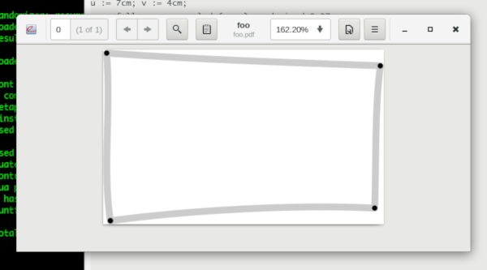
线条
线条即画笔所走的路径。最简单的路径是点。MetaPost 用序对表示点，例如
pair a;
a := (2cm, 3.5cm)
表示在直接坐标系中，横坐标 x 为 2cm 而纵坐标 y 为 3.5cm 之处有一个点 a。draw 命令用于路径的绘制，通过它可将点 a 绘制出来，即
draw a;
从一个点到另一个点，可构成一条线段。例如
pair a, b;
a := (2cm, 3.5cm); b := (5cm, 5cm);
path p;
p := a -- b;
可构造从点 a 到 b 的线段 a -- b，并将其保存到路径变量 p 中。使用
draw p withcolor .625green;
即可绘制这条线段。在该条语句中，线条颜色被设为暗绿色 0.625green。
由于 MetaPost 允许在 draw 语句中直接给出点的坐标的形式构造路径，因此上述 MetaPost 程序可缩减为一行语句：
draw (2cm, 3.5cm) -- (5cm, 5cm) withcolor .625green;
但是，若要绘制复杂的图形，借助变量，会使得 MetaPost 程序更易于编写和理解。例如
pair a, b; path p;
a := (2cm, 3.5cm); b := (5cm, 5cm);
p := a -- b;
pickup pencircle scaled 2pt;
draw p withcolor .625green;
pickup pencircle scaled 4pt;
color darkred; darkred := .625red;
draw a withcolor darkred;
draw b withcolor darkred;

不仅绘制了线段，而且将线段的端点也绘制了出来。
利用线段可绘制任意的多边形。例如，绘制一个直角三角形，
pair a, b, c; path p;
a := (0, 0); b := (4cm, 0); c := (4cm, 3cm);
p := a -- b -- c -- a;
% 注意：凡以百分号领起的文本为 MetaPost 代码注释。
pickup pencircle scaled 5; % 将画笔设为 5 bp
draw p withcolor .8white;
pickup pencircle scaled 4;
draw a; draw b; draw c;
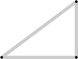
为了便于图形的演示，MetaFun 提供了 drawpath 和 drawpoints 宏，前者用于绘制路径，后者用于绘制路径的节点。通过这两个宏，上例可简化为
pair a, b, c; path p;
a := (0, 0); b := (4cm, 0); c := (4cm, 3cm);
p := a -- b -- c -- a;
drawpath p; drawpoints p;
显然，上述路径 p 是一条闭合路径，但 MetaPost 对此并不知情，需要通过 cycle 命令告诉它，即
p := a -- b -- c -- cycle;
否则，虽然我们认为 p 是闭合路径，但 MetaPost 并不苟同，以致在使用 fill 命令对该路径包围的区域填充颜色时，会导致 MetaPost 报错并罢工。
fill 命令可对闭合路径所包围的区域着色。例如
pair a, b, c; path p;
a := (0, 0); b := (4cm, 0); c := (4cm, 3cm);
p := a -- b -- c -- cycle;
drawpath p; drawpoints p;
fill p withcolor .8blue;
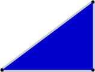
上例中的路径 p 皆为直线插值。MetaPost 支持以曲线插值的方式构造路径。倘若将直线插值符的 -- 替换为曲线插值符 .. 便可产生一条插值于点 a、b 和 c 的曲线路径，
p := a .. b .. c .. cycle;

直线插值符与曲线插值符可并用，例如
p := a .. b .. c -- cycle;

controls 命令可将路径中的某些结点转化为控制点，从而可构造 Bézier 曲线。例如
p := a .. controls b ..c; draw p;

构造的是一条二次 Bézier 曲线路径，此时点 b 成为控制点，曲线只插值于点 a 和 b。MetaFun 提供了 drawcontrollines 以及 drawcontrolpoints 宏，分别用于绘制 Bézier 曲线的控制形及控制点，例如，
p := a .. controls b ..c;
drawpath p; drawpoints p;
drawcontrollines p; drawcontrolpoints p;
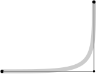
三次 Bézier 曲线需要在路径中设定 2 个控制点，例如
pair a, b, c, d; path p;
a := (0, 0); b := (4cm, 0); c := (4cm, 3cm); d := (0, 3cm);
p := a .. controls b and c .. d;
drawpath p; drawpoints p;
drawcontrollines p; drawcontrolpoints p;
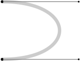
无论是插值曲线还是 Bézier 曲线，MetaPost 最高支持三次曲线。不过，对于形状较为复杂的路径，MetaPost 支持以多段插值直线、曲线以及 Bézier 曲线拼接 注 5 的方式构造路径。
注 5：对于一组曲线，MetaPost 会以切向连续并且近似曲率连续的方式予以光滑拼接。
变换
为了便于对所绘图形作缩放、旋转、平移、错切以及随机扰动等处理，MetaPost 提供了一种数据类型——变换，即含有六个分量的向量：
$$ T = (t_x, t_y, t_{xx}, t_{xy}, t_{yx}, t_{yy}) $$
对于任意一点 \(p=(p_x, p_y)\)，MetaPost 的 transformed 命令可将 \(T\) 作用于 \(p\)，即 p transformed T，可将 \(p\) 变换为
$$ q = (t_{xx}p_x + t_{xy}p_y + t_x, t_{yx}p_x + t_{yy}p_y + t_y) $$
实质上，若以仿射坐标的形式看待 \(p\)，并采用列向量 \(\left[\begin{matrix}p_x \\ p_y \\ 1\end{matrix}\right]\) 表示其坐标，则 \(T\) 的 6 个分量可形成坐标变换矩阵
$$ M = \left[\begin{matrix} t_{xx} & t_{xy} & t_x \\ t_{yx} & t_{yy} & t_y \\ 0 & 0 & 1\end{matrix}\right] $$
此时，p transformed T 语句所描述的坐标变换，便可表示为 \(q = Mp\)。坐标变换矩阵 \(M\) 所描述的是平移、旋转、缩放以及错切等变换的组合，亦即这些特定的变换皆为 \(M\) 的特例。因此，通常并不直接提供六元组形式的变换，而是以 scaled、shifted 以及 rotated 等变换的组合构造一个变换。
假设在边长为 8cm 的正方形区域
numeric sidelength, u;
sidelength := 8cm; u := 0.5sidelength;
drawpath fullsquare scaled sidelength dashed (evenly scaled 1mm);

有四个点
pair a, b, c, d;
a := (-0.5, -0.5) * u;
b := (-0.5, 0.5) * u;
c := (0.5, 0.5) * u;
d := (0.5, -0.5) * u;
它们构成路径 p，
path p; p := a -- b -- c -- d;
drawpath p; drawpoints p;

现在将 p 缩小为原来的 0.5 倍，可为此构造变换 T，
transform T;
T := identity scaled 0.5;
identity 是 MetaPost 内置的恒等变换，其值为向量 (0, 0, 1, 0, 0, 1)，将其写为齐次坐标变换矩阵，可得
$$ \left[\begin{matrix} 1 & 0 & 0 \\ 0 & 1 & 0 \\ 0 & 0 & 1\end{matrix}\right] $$
因此，实际上 identity 表示的是单位矩阵。因此 identity scaled 0.5 所构造的变换，本质上是以一个单位矩阵乘以由 scaled 0.5 构造的缩放变换矩阵
$$ \left[\begin{matrix} 0.5 & 0 & 0 \\ 0 & 0.5 & 0 \\ 0 & 0 & 1\end{matrix}\right] $$
在这里，identity 的唯一作用是喂给 scaled 命令，令其得以工作。因为 MetaPost 所有的特定坐标变换命令在工作时要求它的前面必须存在一个表达式，这个表达式可以是一个变换，也可以是一条路径。因此 identity 能够满足这些命令的需要，而且不影响它们的行为。
使用 transformed 可将 T 作用于路径 p，
path q; q := p transformed T;
drawpath q withcolor .7green;
drawpoints q withcolor .7red;

在 T 的基础上可以继续增加变换。例如，通过 shifted 让经过了缩放变换的 p 向左平移 0.7 * u：
T := T shifted (-0.7 * u, 0);
q := p transformed T;
drawpath q withcolor .7blue; drawpoints q withcolor .7yellow;

接下来，在 T 的基础上，再增加一个旋转变换，令经过了缩放和平移变换后的 p，即 p transformed T，绕其中心点逆时针转动 90 度。通过 rotated 命令可构造旋转变换，但是该命令是以原点为中心对路径进行旋转。若对经过了缩放和平移变换后的 p 绕其中心作旋转变换，首先需要确定 p 在经过缩放和平移之后的中心点。由于 p 的初始中心点可根据它的 4 个节点计算出来，结果为 (0, 0)，亦即原点，因此只需对 p 的初始中心点予以 T 变换，便可得到变换后的 p 的中心点，即
pair pcenter;
pcenter := (0, 0) transformed T;
若让 p transformed T 围绕 pcenter 逆时针旋转 90 度角，需要先对 p transformed T 进行平移变换，令其中心与原点对准，即
p transofmed T shifted (-(xpart pcenter), -(ypart pcenter))
xpart 和 ypart 分别用于提取任意一点的横坐标与纵坐标分量。然后，对此刻的 p 逆时针旋转 90 度角，即
p transofmed T shifted (-(xpart pcenter), -(ypart pcenter)) rotated 90
接下来，通过 shifted 将此刻的 p 移回原位，即
p transofmed T shifted (-(xpart pcenter), -(ypart pcenter))
rotated 90
shifted ((xpart pcenter), (ypart pcenter))
若将上述的变换叠加到 T 中，即
T := T shifted (-(xpart pcenter), -(ypart pcenter))
rotated 90
shifted ((xpart pcenter), (ypart pcenter));
将 T 作用于 p，便可实现 p transformed T 围绕 pcenter 逆时针旋转 90 度角，即
drawpath p transformed T withcolor .7red;
drawpoints p transformed T withcolor .7cyan;
不过，MetaPost 的 rotatedaround 变换已经实现了上述的围绕指定点对路径进行旋转的功能，因此上述的 T 可简写为
T := T rotatedaround (pcenter, 90);
现在，在 T 的基础上，增加一个镜象变换，例如，以过原点 (0, 0) 且斜率为 1 的一条直线为镜线，将 p transformed T 变换为自身的影像。为了便于观察，先将镜线绘制出来，
pair mb, me;
mb := (-1, -1) * u;
me := (1, 1) * u;
drawarrowpath mb -- me;
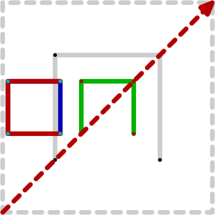
drawarrowpath 宏可绘制路径及其走向。显然，mirrorline 过原点 (0, 0) 且斜率为 1，基于它，可构造一个镜象变换。并将其叠加至 T，即
T := T reflectedabout (mb, me);
将 T 作用于 p 便可得到 p 的镜象，
drawpath p transformed T withcolor .7red;
drawpoints p transformed T withcolor .7cyan;

路径合成
不仅变换可以叠加合成，路径也可以如此。例如，对于上一节所给出的路径 p，对其作旋转、平移变换，生成路径 q，然后通过 -- 可将二者连接起来，即
path q[];
q[1] := p scaled 0.5;
q[2] := q[1] shifted (s, 0);
q[3] := q[1] -- q[2];
drawpath q[3]; drawpoints q[3];

在 MetaPost 中，类似 q 这样的变量称为带有后缀的变量。可以用此类变量模拟数组。
从简单到复杂
通过图形变换和路径合成，可基于简单图形，构造复杂图形。下面以 Hilbert 曲线的绘制为例，在实践中感受 MetaPost 的魅力。
首先，回顾路径 p：
numeric sidelength, u;
sidelength := 8cm; u := 0.5sidelength;
drawpath fullsquare scaled 2s dashed (evenly scaled 1mm);
pair a, b, c, d;
a := (-0.5, -0.5) * u;
b := (-0.5, 0.5) * u;
c := (0.5, 0.5) * u;
d := (0.5, -0.5) * u;
path p;
p := a -- b -- c -- d;
drawpath p; drawpoints p;

此时的 p，称为 1 阶 Hilbert 曲线。
接下来，构造四个变换：
transform sw, nw, ne, se;
sw := identity
scaled 0.5
reflectedabout ((0, 0), (1, 1))
shifted (-0.5u, -0.5u);
nw := identity
scaled 0.5
shifted (-0.5u, 0.5u);
ne := identity
scaled 0.5
shifted (0.5u, 0.5u);
se := identity
scaled 0.5
reflectedabout ((0, 0), (1, -1))
shifted (0.5u, -0.5u);
将这四个变换分别作用于 p 并将生成的新路径连接起来，
p := p transformed sw
-- p transformed nw
-- p transformed ne
-- p transformed se;
drawpath p; drawpoints p;

所得结果称为 2 阶 Hilbert 曲线。对 p 再次做上述变换，便可构造出 3 阶 Hilbert 曲线，即
p := p transformed sw
-- p transformed nw
-- p transformed ne
-- p transformed se;
p := p transformed sw
-- p transformed nw
-- p transformed ne
-- p transformed se;
drawpath p; drawpoints p;

依此类推，可继续构造更高阶的 Hilbert 曲线。随着阶数的升高，曲线很快会将一个正方形区域填满，例如 5 阶曲线，
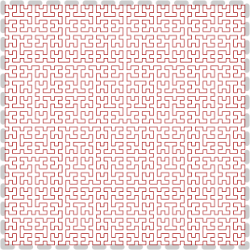
因此，Hilbert 曲线通常被称为空间填充曲线。利用 Hilbert 曲线，可将多维空间转化为一维连续空间。
循环
使用 MetaPost 的 for 循环语句对高阶 Hilbert 曲线的构造代码予以简化。例如构造 5 阶 Hilbert 曲线，只需
for i := 2 upto 5:
p := p transformed sw
-- p transformed nw
-- p transformed ne
-- p transformed se;
endfor;
drawpath p; drawpoints p;
若采用更为通用的 for 语句，上述的 for 代码可改为
for i := 2 step 1 until 5:
p := p transformed sw
-- p transformed nw
-- p transformed ne
-- p transformed se;
endfor;
step 可以控制循环变量 i 的步长。
for 也可用于对象序列的迭代访问。例如
p := p transformed sw
-- p transformed nw
-- p transformed ne
-- p transformed se;
可写为
p := p transformed sw for j := nw, ne, se: -- p transformed j endfor;
MetaPost 允许表达式中出现循环语句，而且循环的最终结果是每一轮循环所包含的内容的连接。
宏
在一个 MetaPost 程序里，除了数据以及注释语句之外，剩下的几乎都是宏。mpost 会将程序中所有的宏展开，从而得到最为基本的绘图语句的组合，继而 mpost 将这些基本的绘图语句翻译为 PostScript 语句，从而得到 PostScript 格式的文档。
宏的展开，其基本原理是文本替换。例如
for i := 1 upto 4:
MetaPost 语句;
endfor;
其中的 upto 就是一个宏，mpost 会将它的展开为 step 1 until。之所以如此，是因为 upto 的定义
def upto = step 1 until enddef;
upto 没有参数，它的展开本质上是单纯的文本替换。有参数的宏可以通过参数调整宏的展开结果；宏的参数，本质上是宏展开文本中可变的部分。
通过有参数的宏，可实现更具一般性的 Hilbert 曲线的构造过程。对于 Hilbert 曲线的构造过程而言，可变的部分有 Hilbert 曲线所填充的正方形区域的边长以及 Hilbert 曲线的阶数，若将二者分别用 numeric 类型的变量 sidelength 和 n 表示，那么一般性的 Hilbert 曲线的构造过程可表示为
numeric u; u := 0.5sidelength;
pair a, b, c, d;
a := (-0.5, -0.5) * u;
b := (-0.5, 0.5) * u;
c := (0.5, 0.5) * u;
d := (0.5, -0.5) * u;
path p;
p := a -- b -- c -- d;
transform sw, nw, ne, se;
sw := identity
scaled 0.5
reflectedabout ((0, 0), (1, 1))
shifted (-0.5u, -0.5u);
nw := identity
scaled 0.5
shifted (-0.5u, 0.5u);
ne := identity
scaled 0.5
shifted (0.5u, 0.5u);
se := identity
scaled 0.5
reflectedabout ((0, 0), (1, -1))
shifted (0.5u, -0.5u);
for i := 2 upto n:
p := p transformed sw for j := nw, ne, se: -- p transformed j endfor;
endfor;
drawpath p; drawpoints p;
将上述语句作为宏 hilbert 的替换文本，并将 sidelength 和 n 作为 hilbert 宏的参数，则 hilbert 宏可定义为
def hilbert(expr sidelength, n) =
numeric u; u := 0.5sidelength;
pair a, b, c, d;
a := (-0.5, -0.5) * u;
b := (-0.5, 0.5) * u;
c := (0.5, 0.5) * u;
d := (0.5, -0.5) * u;
path p;
p := a -- b -- c -- d;
transform sw, nw, ne, se;
sw := identity
scaled 0.5
reflectedabout ((0, 0), (1, 1))
shifted (-0.5u, -0.5u);
nw := identity
scaled 0.5
shifted (-0.5u, 0.5u);
ne := identity
scaled 0.5
shifted (0.5u, 0.5u);
se := identity
scaled 0.5
reflectedabout ((0, 0), (1, -1))
shifted (0.5u, -0.5u);
for i := 2 upto n:
p := p transformed sw for j := nw, ne, se: -- p transformed j endfor;
endfor;
drawpath p; drawpoints p;
enddef;
(expr sidelength, n) 为 hilbert 的参数列表，expr 表示参数 sidelength 和 n 的类型皆为 MetaPost 的表达式。除了 expr 之外，MetaPost 还支持 text 和 suffix 类型的参数。text 类型的参数可以是任意 MetaPost 语句，但结尾必须为 ;。suffix 表示含有后缀的变量，可将该类变量其理解为数组。需要注意，宏的参数，在其替换文本中不能再重新声明或赋值。
现在调用 hilbert 宏，便可将其展开为任意阶数的 Hilbert 曲线的构造及绘制语句。例如，在边长为 8cm 的正方形区域内构造并绘制 4 阶的 Hilbert 曲线，只需
hilbert(8cm, 4);
条件
hilbert 宏有一个 Bug，它无法构造 1 阶 Hilbert 曲线——路径 p 的初始状态。要修复这个 Bug，需要使用条件语句
if 条件:
语句;
elseif 条件:
语句;
else:
语句;
fi
其中，elseif 部分可选。
可在构造 Hilbert 曲线的循环中，利用条件语句，将 n = 1 视为特殊情况，在这种情况中不对 p 进行变换，如此便可得到正确阶树的 Hilbert 曲线，亦即，将 hilbert 宏的替换文本中的
for i := 2 upto n:
p := p transformed sw for j := nw, ne, se: -- p transformed j endfor;
endfor;
修改为
if n > 1:
for i := 2 upto n:
p := p transformed sw for j := nw, ne, se: -- p transformed j endfor;
endfor;
fi
如此，便修复了 hilbert 宏在曲线阶数上的 Bug。
数据与绘图分离
hilbert 宏的定义还存在一个问题，它做的事情太多了，不仅负责 Hilbert 曲线的构造，还负责曲线的绘制。做的事情多，并不意味着功能更强大。若需要对线条的颜色以及粗细虚实予以调整，需要修改 hilbert 宏的定义。应对这些变化，最简单的方法是让 hilbert 不负责绘图，只负责生成 Hilbert 曲线路径。为达到这一目的，需要用 vardef 来定义 hilbert 宏，即
vardef hilbert(expr sidelength, n) =
numeric u; u := 0.5sidelength;
pair a, b, c, d;
a := (-0.5, -0.5) * u;
b := (-0.5, 0.5) * u;
c := (0.5, 0.5) * u;
d := (0.5, -0.5) * u;
path p;
p := a -- b -- c -- d;
transform sw, nw, ne, se;
sw := identity
scaled 0.5
reflectedabout ((0, 0), (1, 1))
shifted (-0.5u, -0.5u);
nw := identity
scaled 0.5
shifted (-0.5u, 0.5u);
ne := identity
scaled 0.5
shifted (0.5u, 0.5u);
se := identity
scaled 0.5
reflectedabout ((0, 0), (1, -1))
shifted (0.5u, -0.5u);
for i := 2 upto n:
p := p transformed sw for j := nw, ne, se: -- p transformed j endfor;
endfor;
p
enddef;
使用 vardef 定义的宏，其替换文本的最后一句即为宏返回的结果。将 p 作为 hilbert 宏的替换文本的最后一句，便可使得 hilbert 返回 Hilbert 曲线路径。
若测试 hilbert 宏能否满足需求，只需
path p; p := hilbert(8cm, 3);
drawpath p; drawpoints p;
使用 randomized 命令对 p 作轻微的随机扰动，可使得 Hilbert 曲线具备一丝艺术气息，
path p; p := hilbert(8cm, 3) randomized 5mm;
drawpath p; drawpoints p;

randomized 能够对出现在它之前的对象按指定幅度予以随机扰动。路径出现于 randomized 之前，则路径中的所有节点的位置会被随机扰动。
变量的作用域
调用 hilbert 宏，即使将其将其返回的路径赋予变量 q，但依然可以用 p 访问 hilbert 所生成的路径：
path q; q := hilbert(5cm, 3);
drawpath p withcolor .625gren;
drawpoints p withcolor .625red;
这意味着在 hilbert 宏的定义中出现的变量 p，在 hilbert 宏的外部也是可见的。之所以出现这样的结果，原因在于 MetaPost 语言中，除了循环结构的变量之外，几乎所有的变量默认皆为全局变量。例如，
for i := 1 upto 5:
path p;
p := fullsquare scaled (i * 1cm) shifted (i * 1cm, 0);
endfor;
drawpath p;
其中，p 为全局变量，但 i 为局部变量。
若要构造一些局部变量，需要使用 begingroup ... endgroup 以及 save 语句。例如，
begingroup
save s, p;
numeric s; path q;
s := 5cm;
q := fullsquare scaled s shifted (s, 0);
endgroup;
drawpath p;
在绘制路径 p 时，mpost 会报错，因为所绘制的路径并不存在。
begingroup ... endgroup 构造了一个作用域，save 则用于声明局部变量的名字。若该结构在宏的定义中使用，便可以对宏内所用的一些不想被外部所知的变量给予保护。
线性方程
mpost 具备线性方程求解的功能。基于这一功能，mpost 可动态确定变量类型。例如，
a = 1;
这里的 = 并非赋值运算符。MetaPost 的赋值运算是上文中一直使用的 :=。这里的 = 表示方程或等式。在上文讲述条件结构的时候，已见识了它。mpost 会对这个方程进行求解，结果是变量 a 的值为 1，因此这条语句等价于
numeric a;
a := 1;
对于
a + 2b = 5;
3b = 7;
mpost 的求解结果为
a = 0.33333;
b = 2.33333;
对于
a = (2cm, 3cm);
mpost 会报错，它认为一个数值与一个点无法构成方程，但是将变量名称写成以 z 开头带有后缀的形式，便可构成方程，例如
z1 = (2cm, 3cm);
mpost 会将 z1 视为一个点 (x1, y1)，因此上述方程本质上是
(x1, y1) = (2cm, 3cm);
反之，倘若 mpost 求解了以下方程
x1 = 3cm;
y1 = 4cm;
就相当于定义了点 z1 = (3cm, 4cm)。变量名称的后缀，可以是数字，也可以是数字 + 字母，还可以是 . + 数字或字母，例如：
z3 = z1; z3r = z1; z.3 = z1; z.3r = z1;
除了可用于节省变量的声明之外，利用 mpost 求解线性方程的功能确定两条线段的交点也极为方便。例如，
path p, q;
z0 = (0, 0); z1 = (7cm, 5cm); z2 = (0, 3cm); z3 = (7cm, 3cm);
p := z0 -- z1;
q := z2 -- z3;
z4 = whatever[z0, z1] = whatever[z2, z3];
drawpath p; drawpath q;
drawpoints z4;

whatever[z0, z1] 表示 z0 -- z1 上的任意一点。若写为 0.5[z0, z1] 表示线段 z0 -- z1 的中点。若写为 1/3[z0, z1] 则表示 z0 -- z1 距离 z0 最近的三等分点。[z0, z1] 这样的写法表示由线段 z0 -- z1 构成的区间。两个数也能构成区间，例如 [2, 4]，再例如 0.5[2, 4] 的结果为 3。
MetaFun：MetaPost + ConTeXt
MetaPost 绘制的图形，通过 MetaFun 便可与 ConTeXt 的排版元素取得结合，从而显著增强 ConTeXt 的排版能力。例如，可以将一条 Hilbert 曲线作为文本框的背景。当然，只要能够绘制 Hilbert 曲线，将其保存为单页面文件，几乎任何一个功能健全的排版软件都能够以该图形作为文本框的背景，但是一旦图形被保存为文件，这就意味着图形失去了可变性，只适于作为特定尺寸的文本框的背景。
假设将一条三阶 Hilbert 曲线以矢量图的形式保存为单页面文件 hilbert-3.pdf，那么在 ConTeXt 中可通过覆盖（Overlay）的方式将其作为文本框的背景图片，即
\usemodule[zhfonts]
\defineoverlay[hilbert][{\externalfigure[hilbert-3.pdf]}]
\setupframed
[background=hilbert,
width=8cm,
height=4cm,
align=middle,
location=lohi,
align={middle,lohi,broad}]
\starttext
\framed{\bfd 天地一指也\\ 万物一马也}
\stoptext
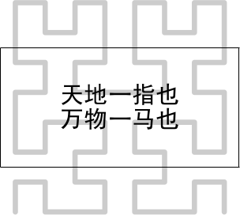
若直接以 hilbert-3.pdf 文件所包含的图形作为文本框（即 \framed）的背景，那么背景图片的尺寸默认是 hilbert-3.pdf 文件所包含的图形的尺寸。显然，这个尺寸太大了，背景图片超出了文本框。
理想的文本框背景应该与文本框的尺寸相等。可通过变量（TeX 宏） \overlaywidth 和 \overlayheight 获得当前的文本框的宽度和高度，并基于这两个尺寸，对背景图片的尺寸进行调整，使之适应文本框，即
\usemodule[zhfonts]
\defineoverlay
[hilbert]
[{\externalfigure
[hilbert-3.pdf]
[width=\overlaywidth, height=\overlayheight]}]
\setupframed
[background=hilbert,
width=8cm,
height=4cm,
align=middle,
location=lohi,
align={middle,lohi,broad}]
\starttext
\framed{\bfd 天地一指也\\ 万物一马也}
\stoptext
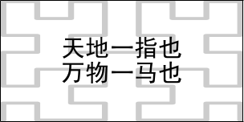
现在，背景图片被硬性地塞入了文本框，结果导致 Hilbert 曲线的线条变细，并且横向的线条被圧扁了。这正是以图形文件中的图形作为文本框背景的弊端所在，即背景图形中的线条失真。此外，经过缩放的 Hilbert 曲线，虽然恰好能够充满文本框，但实际上并不正确，因为 3 阶的 Hilbert 曲线是不可能恰好充满它所填充的空间。这些失真在 MetaPost 绘图过程中不会出现。当 MetaPost 通过 MetaFun 与 ConTeXt 取得融合时，ConTeXt 的排版元素便能够享有这一优势。
为实现 MetaPost 与 ConTeXt 排版元素的融合，MetaFun 提供了 uniqueMPgraphic 环境，在该环境内编写 MetaPost 程序，然后这个环境可以像插图那样在 ConTeXt 排版元素中使用。例如，
\startuniqueMPgraphic{hilbert-3}
vardef hilbert(expr sidelength, n) =
u = 0.5sidelength;
z1 = (-0.5, -0.5) * u;
z2 = (-0.5, 0.5) * u;
z3 = (0.5, 0.5) * u;
z4 = (0.5, -0.5) * u;
path p; p := z1 -- z2 -- z3 -- z4;
transform sw, nw, ne, se;
sw := identity
scaled 0.5
reflectedabout ((0, 0), (1, 1))
shifted (-0.5u, -0.5u);
nw := identity
scaled 0.5
shifted (-0.5u, 0.5u);
ne := identity
scaled 0.5
shifted (0.5u, 0.5u);
se := identity
scaled 0.5
reflectedabout ((0, 0), (1, -1))
shifted (0.5u, -0.5u);
for i = 2 upto n:
p := p transformed sw for j := nw, ne, se: -- p transformed j endfor;
endfor;
p
enddef;
path p; p := hilbert(OverlayWidth, 3);
drawpath p yscaled (OverlayHeight / OverlayWidth);
\stopuniqueMPgraphic
在上述名为 hilbert-3 的 uniqueMPgraphic 环境中，对 hilbert 宏所生成的 Hibert 曲线，根据变量 OverlayWitdh 和 OverlayHeight 的值给出了适应性的缩放，亦即在 uniqueMPgraphic 环境中，MetaPost 程序可以共享 ConTeXt 排版元素的一些变量。
若将上述 uniqueMPgraphic 环境作为文本框的背景图片，只需
\defineoverlay[hilbert][\uniqueMPgraphic{hilbert-3}]
\setupframed
[background=hilbert,
width=8cm,
height=4cm,
align=middle,
location=lohi,
align={middle,lohi,broad}]
\starttext
\framed{\bfd 天地一指也\\ 万物一马也}
\stoptext
结果可得

使用 \framed 的 frame=off 可以隐藏文本框的边框，这样便可得到以 3 阶 Hilbert 曲线作为背景的文本框，而且背景的尺寸能够适应文本框的尺寸的变化。例如，
\setupframed[frame=off]
\midaligned{\framed{\bfd 天地一指也\\ 万物一马也}}
\blank[1cm]
\midaligned{\framed[width=12cm, height=3cm]{\bfd 天地一指也\\ 万物一马也}}
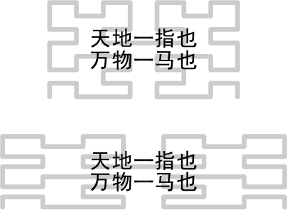
以上仅以文本框为例，简单介绍了 ConTeXt 与 MetaPost 的结合。事实上，对于 ConTeXt 的任一排版元素，只要它具备 background 选项，便可以利用 MetaPost 图形为其构建背景图形。即使一些排版元素不具备 background 选项，但是只要它们具备 command 选项，便可以通过嵌入文本框的方式与 MetaPost 图形结合。
结语
有关 MetaFun 更为详细的介绍见荷兰人 Hans Hagen 所写的 MetaFun 手册 10 。Hans Hagen 即是 ConTeXt 的开发者，也是 MetaFun 的开发者。
{kind=link}
对于以编程的方式绘制精确二维矢量图这种任务而言，MetaPost 是一种功能强大的编程语言。不过，适合这一任务的功能强大的编程语言并不少，譬如 LaTeX 的小伙伴 pgf/tikz，擅长绘制三维矢量图的 Asymptote，擅长绘制图表的 gnuplot、MathGL 等。与这些同类相比，MetaPost 胜出之处在于语法的优雅。
MetaPost 语法的优雅一方面来自于它的宏编程特质。像每一种优雅都来自刻苦地训练一样，MetaPost 的优雅也并非朝发夕至之工可致。在编写这篇文章的一些简单示例的过程中，mpost 崩溃次数难以历数，而且它的每次崩溃几乎都会给出冗长的出错信息，需要像侦探一样从中查出端倪。因此，MetaPost 的优雅只是会向那些绘制精确矢量图这种任务乐此不疲的人绽放。另一方面，MetaPost MetaPost 绘图命令与英文的语法相近，即「谓语 + 宾语 + 定语 + 状语」的形式，例如，
主语 I（省略） + 谓语 draw + 路径 p + 定语 scaled 0.5 + 状语 withcolor .8red;
MetaFun 的出现，为 MetaPost 在排版领域开辟了用武之地。在文档排版方面，利用 MetaPost 所绘制的精确的矢量图形为一些排版元素构造背景，使得文档的排版更为精美。
绘图是一门艺术。排版也是一门艺术。艺术的重要性在于它能够开拓人类的思维空间。使用 MetaPost 绘图，使用 ConTeXt 对文档进行排版则是技术。艺术的空间需要借助技术去探索或开拓。MetaFun 贯通了 MetaPost 和 ConTeXt，意味着具备了探索或开拓计算机绘图与排版相融合的艺术空间的一种工具。
引用的文献：
[1] 序幕有些长
[3] 先写作，后排版
[5] 文稿的物理结构
[6] 文稿的逻辑结构
[7] 页面布局
[8] ConTeXt Mark IV an excursion
[10] MetaFun Manual